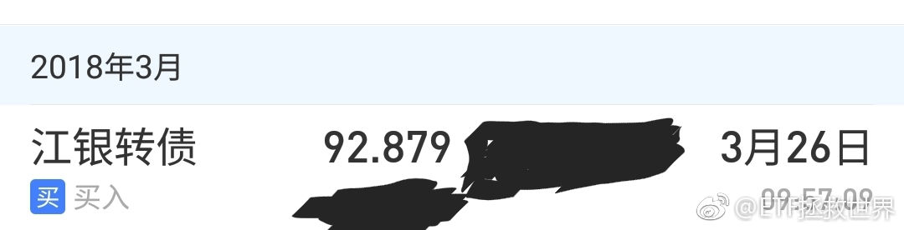

谁能想到650点浮亏十几个点的券商到700点只浮亏3%了。再说一次，计划里的任何品种，我说的是任何，我都会尽量将成本控制在最低价格的10%-15%之内。牛市来临后，1-2周变成浮盈，之后开始爆发。那时候你才会发现，之前不论多长时间的等待都是值的。
一个品种到底有什么价值，咱们做投资应该心里门儿清才行。比如有的品种，只有交易价值，没有长期持有价值。什么品种，比如黄金，油之类的。就是持有大波段。有的品种可以超长期持有，收益还会不错。比如宽基或者好行业的指数基金。ETF。如果你把有些有交易价值的品种当做长期价值品种持有，有时候就会犯大错。比如今天跌停的某些品种。价值，始终是最重要的。一个1毛钱的品种你一定要长期以4毛5毛的价格持有去博，即使没有政策，我看也要出大问题。不过，我感兴趣的，是这些有交易价值的品种何时有价值让我进场交易。逆向思维，很重要。
回复@伊闼基:小米的东西合适的话我都愿意试试。我现场听过一次雷军关于新国货的演讲。//@伊闼基:小米牌空调，你买不买？@ETF拯救世界@ETF拯救世界:手机如果没有太大突破，出货量应该会没那么高成长了。这个时候上市很合适。我还是很欣赏雷军的。
回复@陈治鸣:就是因为反弹了我才说的。这就是阴跌的特征啊。波动0.x%。给你点希望，然后再跌0.x%。什么叫阴？就是跌了很久很久你发现根本没跌多少。这种最讨厌，完全就是用时间换空间。//@陈治鸣:刚说完就开始涨，几个意思啊@ETF拯救世界:从现在起，各位做好心理准备，迎接漫漫阴跌吧。没什么大问题，解决心理问题以后逢低布局就可以。最主要是心理问题。所有希望都被磨平后的麻木与绝望是需要警惕的。
回复@Terry张_:万一你说的“底部”不到就开始涨了呢。目前的仓位，是我的体系根据概率计算出的，我自认为合理的仓位。可以应对跌到你说的底部，也可以应对突然开始上涨。未来是未知的，模糊的，没有一定会发生的，只能根据概率下注。@ETF拯救世界:从现在起，各位做好心理准备，迎接漫漫阴跌吧。没什么大问题，解决心理问题以后逢低布局就可以。最主要是心理问题。所有希望都被磨平后的麻木与绝望是需要警惕的。
回复@秦雪晖23333:我倒不认为这种整数关口有什么用。2005年跌破1000点，中金喊出700目标位，结果不是998见底。我认为更关键的是趋势。目前趋势稀烂很多人还在幻想大牛市马上来……目前就是先保命，收集筹码，等待戈多。@ETF拯救世界:记住，想办法，活下去。
回复@利利亚斯的守门人:先看看效果吧。dax这两年不是很好。在国内买个靠谱的QDII指基真的很难。//@利利亚斯的守门人:这就是个坑！先前官方小编还在雪球上说不是fof，打开招募说明是一看，就是fof，那也就算了，tmd还收1.6%的管理费。老老实实做一个跟踪msci印度的基金对他们好像很困难的样子。@ETF拯救世界:上次说可转债有人买了吗 